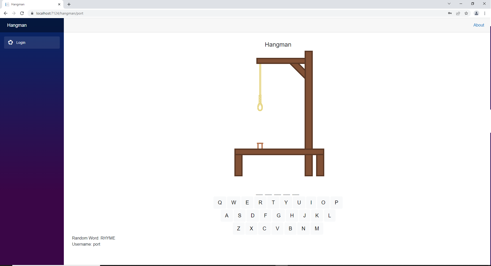
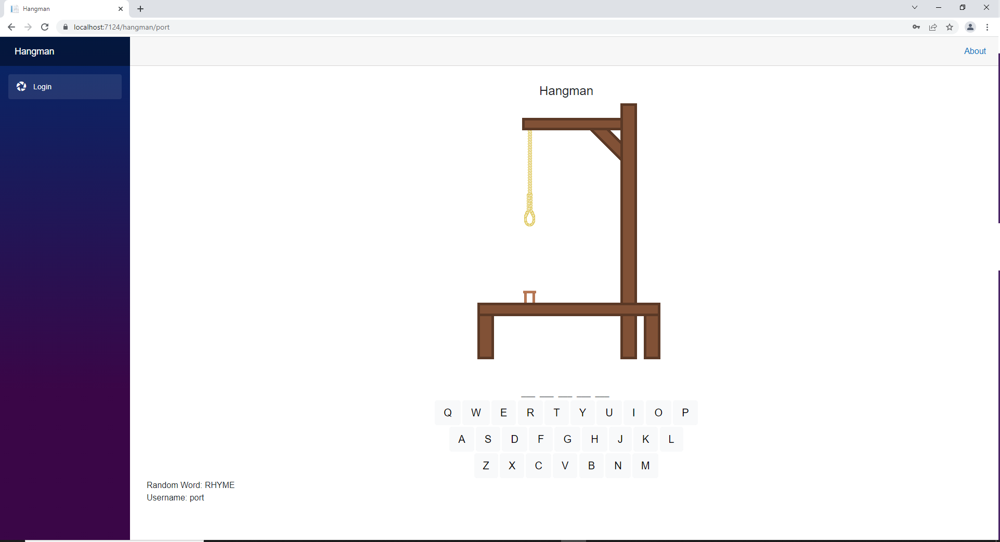

Hangman
This was a group project with team members Tage Higley, Dennis Chase, Hunter Olson, and Cecilia Harvey. We were told to make a dotnet website where you could login, play hangman, and see top ten scores. This was my first introduction to .NET, C# and Blazor.
When logging in the users credentials are sent to the server side with the use of SignalR. Once in the server the password is salted and hashed then saved to the database. The database used in this project is hosted remotely. After logging in the user can start playing the game. The word is chosen randomly from a list of words stored in the project. When a user chooses a letter all instances of that lettes is shown. If they win and their score is better than their last it is stored and the top ten scores are shown. The website works asynchronous so there are no page refreshes when playing the game.
I designed the login and hangman pages. To display the keyboard I stored each letter in a Dictionary along side a boolean value to check it the letter has been clicked. I also developed the functionality of the game. When a letter is pressed it is compared with a distinct array of the words letters. If the letter is in the word, the Dictionary that contains the letters of the word and a boolean value is updated to show that the letter has been guessed. Finally I wrote a function that pulls the top ten scores from our database with the code below.
public Dictionary
{
string query = "SELECT TOP 10 username, score FROM Users WHERE score <> -1 ORDER BY score ASC";
Dictionary<string, string> top10 = new Dictionary<string, string>();
using (OdbcConnection connection = new OdbcConnection(ConnectionString))
{
OdbcCommand command = new OdbcCommand(query, connection);
try
{
connection.Open();
OdbcDataReader reader = command.ExecuteReader();
while (reader.Read())
{
top10.Add(reader[0].ToString(), reader[1].ToString());
}
reader.Close();
return top10;
}
catch(Exception ex)
{
throw new Exception(ex.Message, ex);
}
}
}
The challenge I faced with this project was the functionality of the Hangman page. At first I was just try what came to mind and that wasn't working. I stepped back and laid out what I needed the program to do. After that with fresh eyes I was able to figure it out.
 
